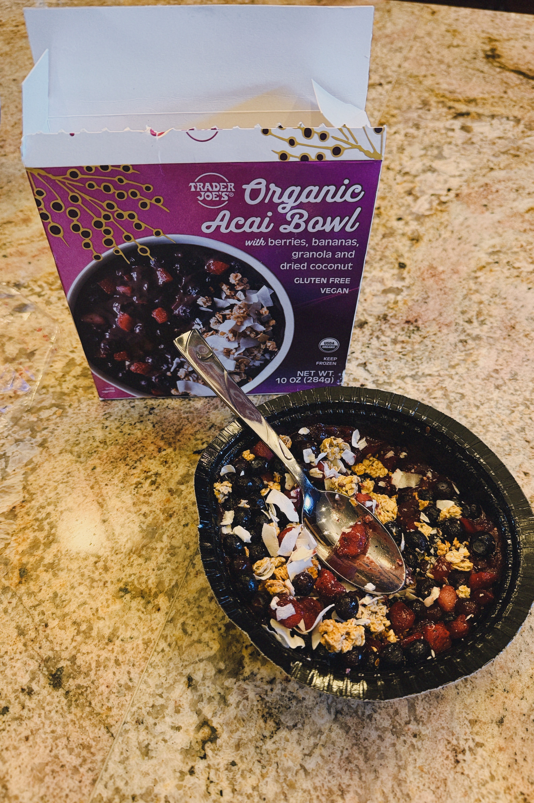
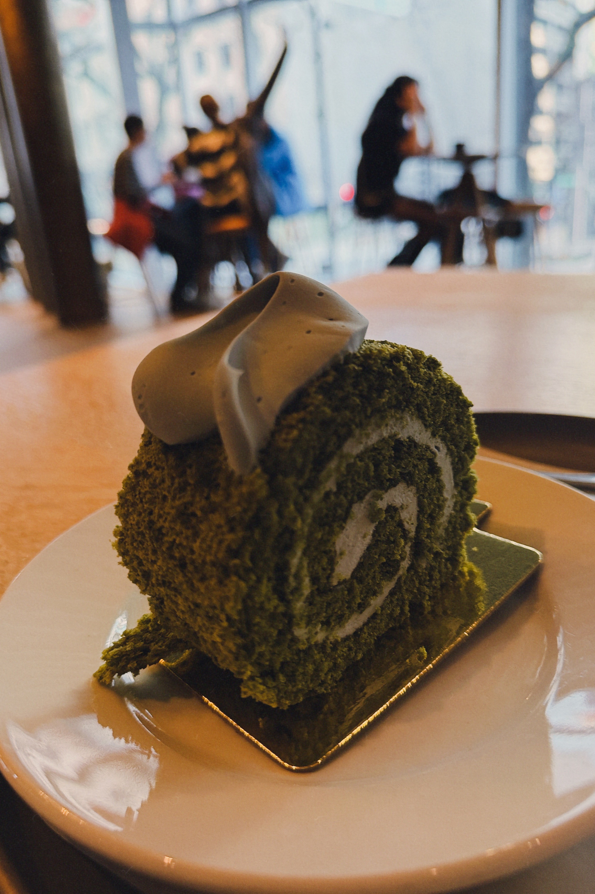
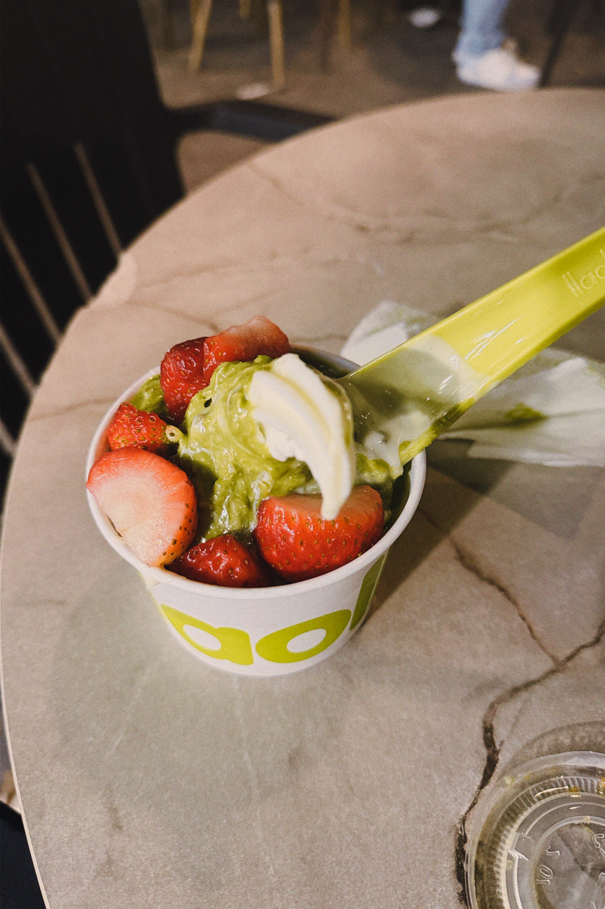

Matcha Bread
Rating: 5/5
Good flavor, sweet, soft, delicious
Matcha Bread
Rating: 5/5
Good flavor, sweet, soft, delicious

Korean Corn Dog
Rating: 5/5
So DELICIOUS, CHEESY, AND AMAZING It was filling too. Really good
Crumbl Dubai Sandwich
Rating: 5/5
So delicous. It was crunchy and the pistachio filling was very delicious and good

Yellow Dragonfruit
Rating: 5/5
Sweet, juicy, full of flavor Best color dragonfruit there is.
Turkey Sandwich
Rating: 2.5/5
No complaints it was plain but just was going for simple lunch. But overall it was alr.
Yogurt Bowl
Rating: 4/5
It was really refreshing and light. A really nice breakfast. Points off because of the sugar in the yogurt other then that. It was really nice.
Trader Joe's Chicken Soup Dumplings
Rating: 1000000/5
I'm not even being dramatic these are like my favorite thing ever. I literally love everything from trader joes and these dumplings really hit it off for me. I truly love the dumplings.
Core Life Eatery Tuna Poke Bowl
Rating: 5/5
I went out to Core Life Eatery with my friend. I ordered a tuna poke bowl and it was genuinely so good. I would definitely order again.

Crumbl Dubai Brownie
Rating: 5/5
I really enjoyed this mini dubai choclate brownie. It was very good and I am glad that I finally got to try it. It was the best. I love dubai choclate.

Matcha Yogurt
Rating: 10/5
It was one of my favorite ways to eat yogurt. I just really like matcha anything. But matcha yougrt was different. It felt like I was eating dessert for breakfast.
Homemade Lazy Girl Salmon Poke Bowl
Rating: 7/5
I bought all the ingredients from Trader Joe's. Genuinely it was one of the best things I made. It tasted sooo good.
Cauliflower Soup made by my beautiful mom
Rating: Infinity/5
There is no scale for my moms cooking. She is the best cook ever. I love my mom so much. Nothing will ever beat her food

Trader Joe's Acai Bowl
Rating: 4/5
It was light and refreshing. It makes a great breakfast.

Starbucks Reserve Roastery Matcha Cake
Rating: 5/5
Actually I know it was dense but it tasted pretty light. Also the way it looked was just stunning. Excellent presentation. The taste itself was also just perfection. I really loved this cake and thought it was just divine.

Iberia Airplane Pasta
Rating: 3.5/5
Honestly not much to say for airplane food it was alright. It tasted good. I like pasta.

llaollao Froyo
Rating: 5/5
It tasted good. I had it in spain and it had that sour taste that yogurt is supposed to have while still being sweet and delicous. Topping with strawberry, dubai filling and white chocolate was peak move.